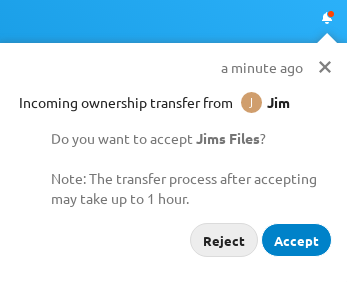

Transfer Ownership
Users can transfer the ownership of files and folders to other users. Share ownerships of those transfered files/folders will also be transferred.
Navigate to Settings > Personal > Sharing > Files.
Click on Choose file or folder to transfer >> A file picker opens, showing all files and folders in the user’s account.
Pick a file or folder and click on Choose >> The chosen file or folder name gets displayed.
Click on Change to change the choice if necessary.
Pick a new owner by typing their name into the search field next to New owner.
Click on Transfer.
Note
The username autocompletion or listing may be limited due to administrative visibility configuration. See admin documentation for details.
The target user receives a notification where they are being asked whether to accept or reject the incoming transfer.

If accepted, the target user finds the transferred files and folders in their root under a folder Transferred from [user] on [timestamp].
The source user gets informed about the acceptance or rejection by a notification.